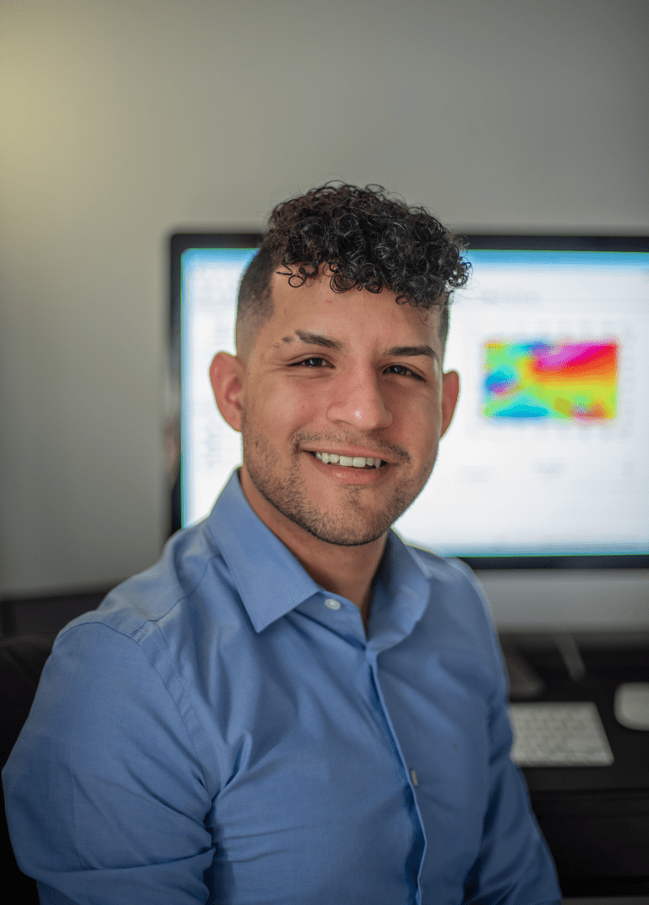

About me
Ederson is an Ottawa, OT-based geophysicist and interdisciplinary artist working in the fields of music and sound, visual art and theater. His current interests involve music design for video games and film, producing animated graphic scores, working with advanced music software such as Max/MSP, and the visual arts. His works have won awards for best video game audio design, multiple university scholarships and recently her animated graphic score, A Composer’s Nightmare, has been featured in the Toronto 4th Multicultural Film Festival 2021.
Ederson's primary goal in her works is emotional storytelling that ignites passion. Music cannot effectively impact listeners without having a story and without having emotion. Ederson has taken a new interest in musical compositions that are designed to explore the impact of music on the conscious and subconscious emotional reactions of both the performers and listeners. His goals are to design music in both the film and video game industries, as well as live performances (taking multiple forms), that turn the active listener into a participant; creating their own personal story and subsequently emoting on a transcendent level.
Education
- Master of Science: Geophysics (2019) - Memorial University, St. John's, Canada
- Bachelor of Engineering: Geophysics (2016)- Simon Bolivar University, Caracas, Venezuela
Languages
- English C1/8 IELTS (2021)
- French B2 TEFL (2021)
- Portuguese inmmersion in Brazil (2012)
- 2 years of Italian language and culture
- Native Spanish speaker
Profesional Experience
- Project Geophysicist (2021 - now) Abitibi Geophysics, Quebec, Canada
- Teaching Assistant (2017-2018) Memorial University, Newfoundland, Canada